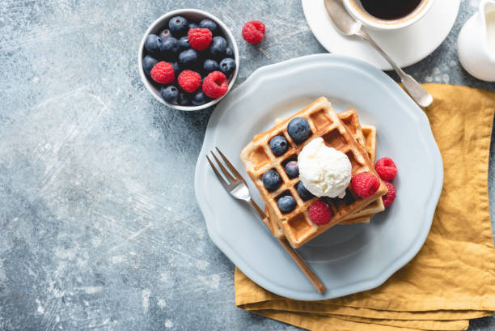

Bahan:
- 100 gram tepung terigu serba guna
- 25 gram tepung Maizena
- 1 butir telur besar, pisahkan antara kuning dan putihnya
- 1/2 sdt Garam
- 1/2 sdt Baking Powder
- 1/4 sdt Baking Soda
- 240 ml susu cair
- 6 sdm minyak sayur
- 1 sdm Gula pasir
- 1/2 sdt vanilla bubuk
Cara Membuat:
- Panaskan cetakan waffle pada suhu 150 derajat Celcius.
- Campurkan bahan-bahan kering seperti tepung terigu, tepung maizena, baking powder, baking soda dan garam menjadi satu; lalu ayak.
- Campurkan kuning telur yang sudah dipisahkan dari putihnya dengan susu cair dan minyak sayur.
- Di wadah yang terpisah, kocok putih telur sampai mulai mengembang. Sambil terus dikocok, masukkan gula pasir sedikit demi sedikit dan kocok terus hingga busa putih telur itu kaku, tambahkan juga vanila bubuk
- Satukan adonan bahan-bahan basah yaitu campuran susu cair, minyak sayur dan kuning telur ke dalam adonan bahan-bahan kering yang sudah diayak tadi. Aduk dengan mixer hingga adonannya tercampur rata.
- Setelah tercampur rata masukkan juga putih telur yang sudah dikocok bersama gula dan vanilla tadi ke dalam adonan. Perlahan-lahan aduk dengan spatula hingga adonannya menyatu.
- Oleskan mentega pada cetakan waffle yang sudah dipanaskan sebelum mulai memasak waffle. Setelah diolesi mentega, tuang adonan waffle secukupnya ke dalam cetakan.
- Masak hingga berwarna kecoklatan dan bagian luarnya mulai mengeras.
- Angkat waffle yang sudah jadi dan sajikan dengan topping pilihanmu.
|